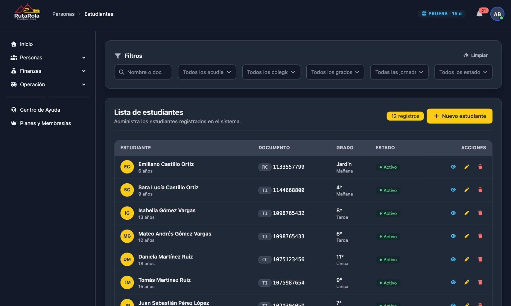
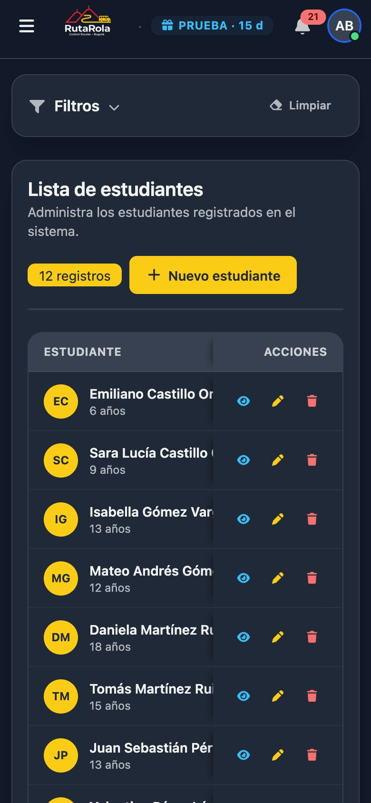
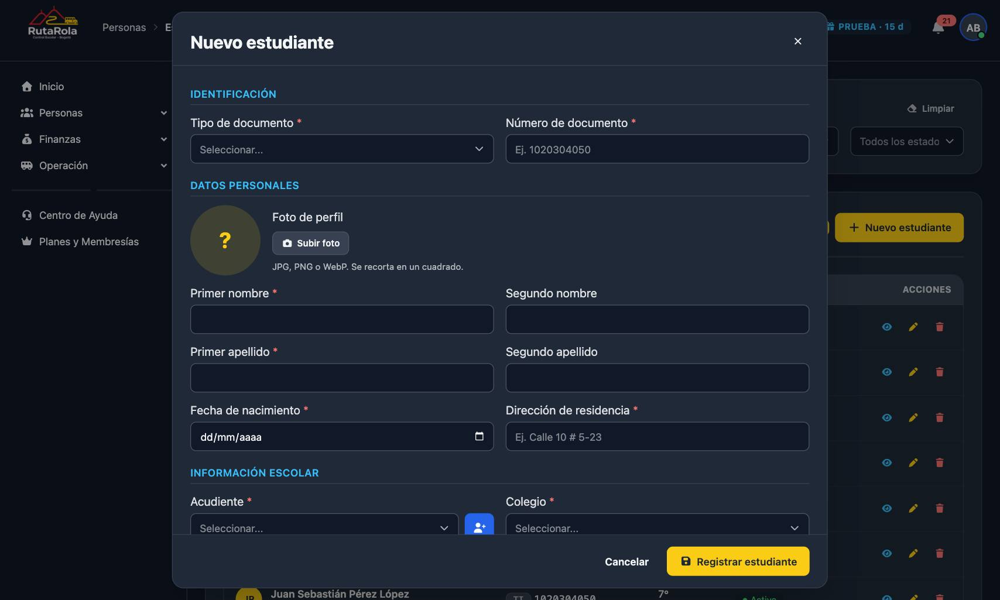
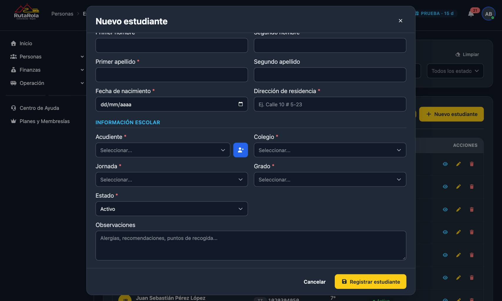
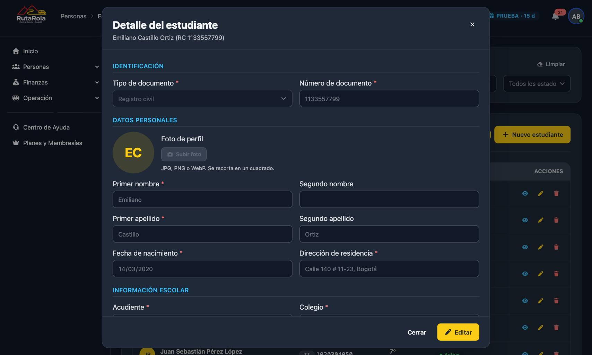

Cómo registrar a cada estudiante con su colegio, jornada, grado y acudiente, y cómo consultarlo, editarlo o retirarlo del servicio.
Para administradores de la empresa de transporteVersión noviembre 2026
Contenido
Antes de empezar Qué necesitas tener listo
La lista de estudiantes Buscar, filtrar y leer la tabla
Registrar un estudiante Paso a paso
Consultar y editar Ver o corregir los datos
Retirar o eliminar Inactivar en vez de borrar
Preguntas frecuentes Errores comunes y cómo resolverlos
¿Cómo leer este manual?
Los nombres de menú aparecen así: Personas › Estudiantes. Los botones aparecen así: Nuevo estudiante. Los campos del formulario van en negrita. Los campos con * son obligatorios.
1. Antes de empezar
Un estudiante en RutaRola siempre está unido a tres cosas: un acudiente (quien responde y paga), un colegio y un curso (grado + jornada) de ese colegio. Por eso conviene tenerlos listos antes.
Necesitas
Dónde se crea
Por qué
El colegio, con sus cursos
Operación › Colegios
Los grados que puedes elegir salen de los cursos activos del colegio en la jornada del estudiante.
El acudiente
Personas › Acudientes
Todo estudiante tiene un acudiente. Si no existe, puedes crearlo desde el mismo formulario del estudiante.
ConsejoSi el grado que buscas no aparece en la lista, es porque el colegio no tiene ese curso en esa jornada. Agrégalo en Operación › Colegios (ver el manual Rutas y operación).
2. La lista de estudiantes
Entra por el menú lateral a Personas › Estudiantes. Verás los filtros arriba y la tabla con todos los estudiantes de tu empresa.

Lista de estudiantes con sus filtros.
Qué muestra cada columna
Estudiante: foto (o sus iniciales), nombre completo y edad.
Documento: tipo (RC, TI, CC…) y número.
Grado y debajo la jornada.
Estado: Activo (usa el servicio) o Inactivo (retirado).
Acciones: ojo = consultar, lápiz = editar, caneca = eliminar.
Buscar y filtrar
Escribe en Nombre o documento: la lista se filtra mientras escribes (no importan tildes ni mayúsculas).
Usa las listas Acudiente, Colegio, Grado, Jornada y Estado. En cada una puedes escribir para encontrar la opción más rápido.
Para ver de nuevo todo, toca Limpiar.

En el celular los filtros se pliegan; tócalos para abrirlos.
PaginaciónAbajo de la tabla puedes cambiar de página y elegir cuántas filas ver. El texto “Mostrando 1–10 de 25” te dice cuántos hay en total.
3. Registrar un estudiante
En Personas › Estudiantes toca Nuevo estudiante. También puedes hacerlo desde Inicio con el botón Nuevo estudiante.
Identificación. Elige el Tipo de documento (Registro civil, Tarjeta de identidad…) y escribe el Número de documento. No puede repetirse con otro estudiante.
Datos personales. Si quieres, toca Subir foto: la foto se recorta sola en un cuadrado y ayuda a la monitora a reconocer al niño en la ruta. Escribe Primer nombre, Primer apellido (y los segundos si los tiene), la Fecha de nacimiento y la Dirección de residencia, que es donde lo recogen y lo dejan.

Primera parte del formulario: identificación y datos personales.
Información escolar. Elige el Acudiente. Si aún no está registrado, toca el botón azul con el icono de persona junto al campo: se abre un formulario encima para crearlo sin perder lo que ya escribiste.
Elige el Colegio, luego la Jornada y después el Grado. El grado solo muestra los cursos que ese colegio tiene en esa jornada. Si después cambias la jornada, el grado queda vacío y debes elegirlo otra vez entre los cursos de la nueva jornada.
Deja el Estado en Activo y escribe Observaciones si hay algo importante (alergias, quién puede recibirlo, etc.).
Toca Registrar estudiante (abajo a la derecha). Verás un mensaje verde de confirmación y el estudiante aparecerá en la lista.

Segunda parte: información escolar y estado. Los botones siempre están abajo, sin tener que desplazarte.
Si algo faltaEl sistema marca en rojo el campo que falta o está mal y escribe debajo qué corregir. Nada se guarda hasta que todo esté correcto.
Siguiente pasoUn estudiante nuevo todavía no tiene ruta ni factura. Agrégalo a una ruta en Operación › Rutas y créale su factura en Finanzas › Facturas. En Inicio, la alerta “Estudiantes activos sin ruta” te recuerda los que faltan.
4. Consultar y editar
Toca cualquier fila de la tabla (o el icono del ojo) para consultar. Los datos se muestran sin poder cambiarlos, para evitar errores.
Si necesitas corregir algo, toca Editar en la parte de abajo de la ventana (o el lápiz en la tabla).
Cambia lo necesario y toca Guardar cambios.

Consulta de un estudiante.
Los documentos ya emitidos no cambianSi corriges el nombre del estudiante, las facturas, recibos y cotizaciones ya emitidos conservan el nombre con el que se hicieron, como un documento contable.
5. Retirar o eliminar un estudiante
Cuando el estudiante deja el servicio: inactívalo
Abre el estudiante y toca Editar.
Cambia el Estado a Inactivo y guarda.
Al inactivarlo, RutaRola registra automáticamente el retiro en su factura desde el mes siguiente (o después del último mes pagado): ya no se le cobran los meses siguientes y su historial queda intacto.
Eliminar
Solo puedes eliminar (icono de caneca) un estudiante que no se usa en ningún otro lugar. Si ya está en una ruta, tiene facturas o recibos, el sistema te dirá por qué no se puede y te sugerirá dejarlo Inactivo.
Eliminar no se puede deshacerAntes de borrar, el sistema te pide confirmación. Úsalo solo para registros creados por error.
6. Preguntas frecuentes
No me aparece el grado que necesito
El colegio no tiene ese curso activo en la jornada elegida. Entra a Operación › Colegios, consulta el colegio, toca Editar y agrega el curso en “Parametrizar cursos”.
Dice que el documento ya existe
Ya hay un estudiante con ese número. Búscalo con el filtro Nombre o documento; puede estar Inactivo. Si es el mismo niño, actívalo en vez de crearlo de nuevo.
No puedo agregar el estudiante a una ruta
La ruta debe ser del mismo colegio y la misma jornada del estudiante, y un estudiante no puede estar en dos rutas activas de la misma jornada.
Ya no puedo crear más estudiantes
Llegaste al límite de tu plan. Revisa Planes y Membresías o inactiva estudiantes que ya no usan el servicio.
¿Necesito ayuda?
En Centro de Ayuda toca Crear solicitud y cuéntanos qué pasa; puedes adjuntar una captura de pantalla.